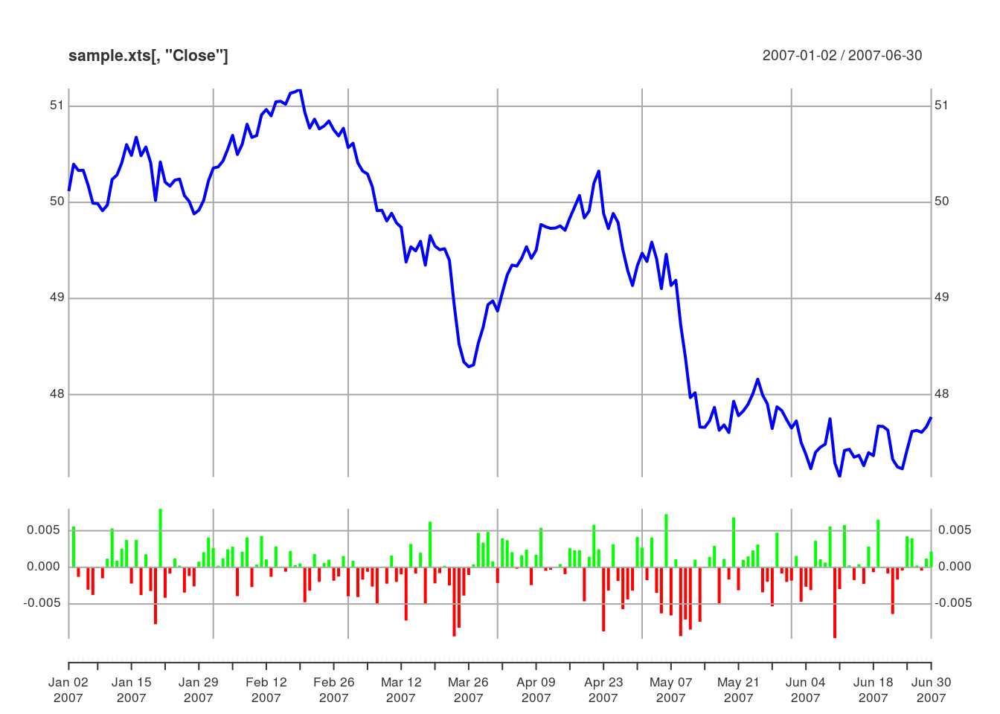
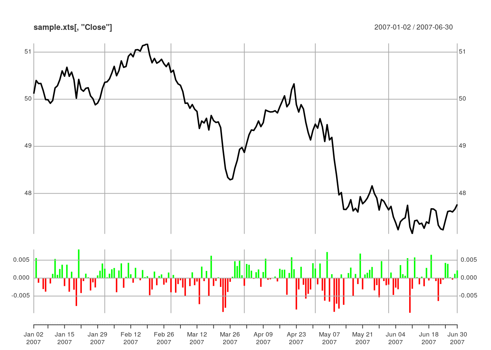
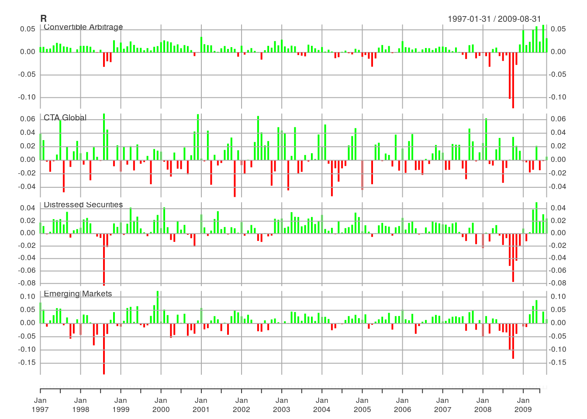
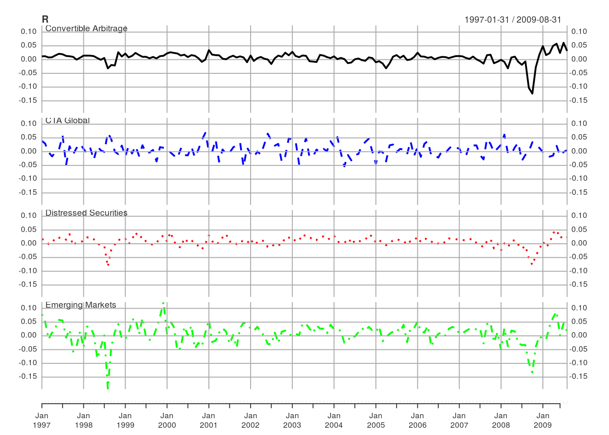
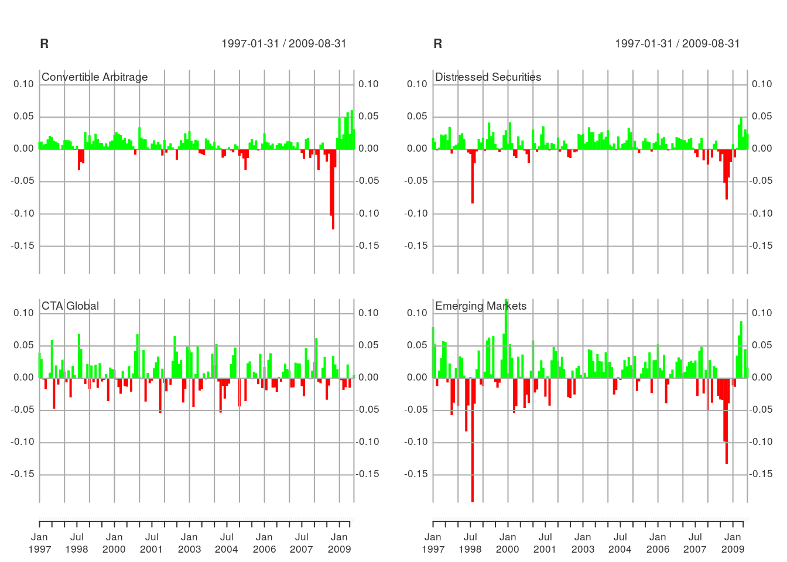
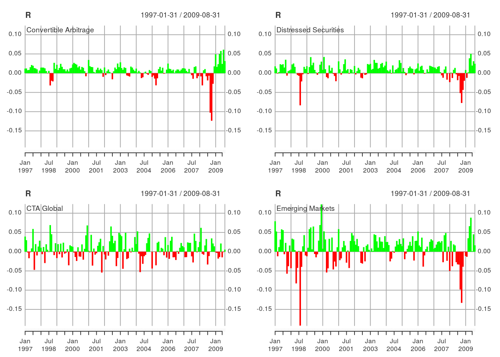
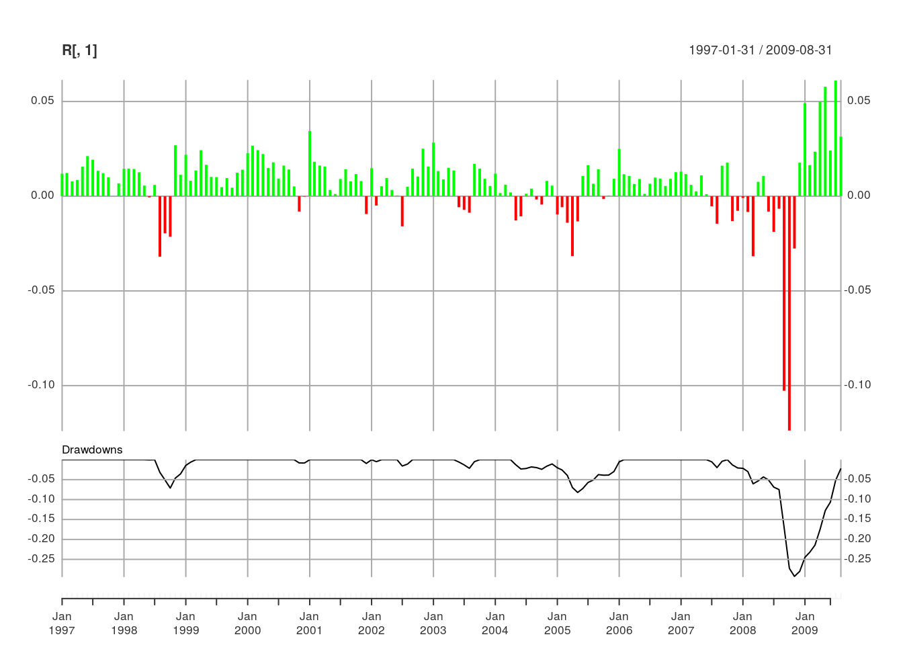
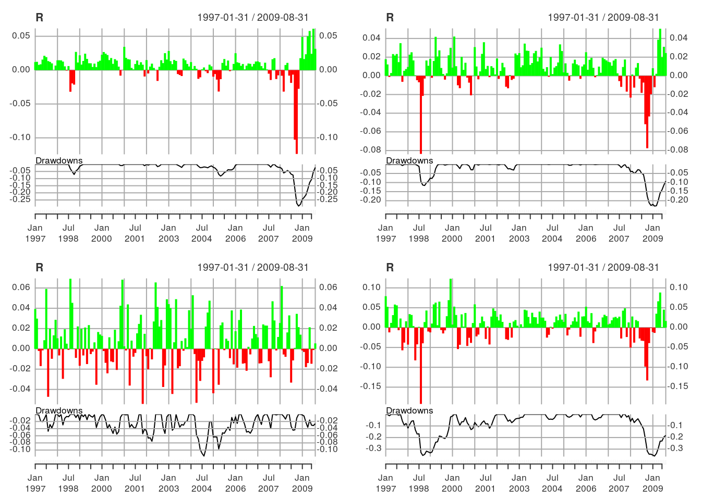

Plotting Panels
Panel Basics
Load the xts package and some sample OHLC data. The PerformanceAnalytics package is loaded for functions that will be used in the examples and the edhec dataset of EDHEC composite hedge fund style index returns.
library(xts)## Loading required package: zoo
##
## Attaching package: 'zoo'
##
## The following objects are masked from 'package:base':
##
## as.Date, as.Date.numericlibrary(PerformanceAnalytics)##
## Attaching package: 'PerformanceAnalytics'
##
## The following object is masked from 'package:graphics':
##
## legenddata(sample_matrix)
sample.xts <- as.xts(sample_matrix)Create a basic plot and add a panel of the simple returns
plot(sample.xts[,"Close"])
lines(Return.calculate(sample.xts[,"Close"]), type="h", on=NA)
Instead of calculating the returns and plotting the result, an alternative is to use addPanel which is useful for applying a function to the raw data in the current plot object. Note that addPanel accepts a function, it does not accept data like lines and points. The raw data in the current plot object is passed to the first argument in FUN. Additional arguments to FUN are passed via dots (...).
# plot the Close
plot(sample.xts[,"Close"], col="blue")
# calculate returns
addPanel(Return.calculate, method="discrete", type="h")
We can also create the same plot by using the panels argument.
plot(sample.xts[,"Close"],
panels='lines(Return.calculate(sample.xts[,"Close"]), type="h", on=NA)')
Multiple Panels
Load the edhec data from PerformanceAnalytics. Here will use the first 4 columns of the edhec returns data to demonstrate panel and small multiples functionality.
data(edhec)
R <- edhec[,1:4]
head(R)## Warning: index class is Date, which does not support timezones.
## Expected 'UTC' timezone, but indexTZ is GMT## Convertible Arbitrage CTA Global Distressed Securities
## 1997-01-31 0.0119 0.0393 0.0178
## 1997-02-28 0.0123 0.0298 0.0122
## 1997-03-31 0.0078 -0.0021 -0.0012
## 1997-04-30 0.0086 -0.0170 0.0030
## 1997-05-31 0.0156 -0.0015 0.0233
## 1997-06-30 0.0212 0.0085 0.0217
## Emerging Markets
## 1997-01-31 0.0791
## 1997-02-28 0.0525
## 1997-03-31 -0.0120
## 1997-04-30 0.0119
## 1997-05-31 0.0315
## 1997-06-30 0.0581To plot each column in a separate panel, specify multi.panel = TRUE. The default behavior is to use the same range for the y-axis for each panel.
plot(R, multi.panel=TRUE, type="h")
Plot each column of data in a separate panel, setting the range of the y-axis for each panel based on each column of data. Note how each panel has a different y-axis range.
plot(R, multi.panel=TRUE, type="h", yaxis.same=FALSE)
Attributes such as col, lty, and lwd are passed to each panel.
plot(R, multi.panel=TRUE, col=c("black", "blue", "red", "green"), lty=1:4)
An important feature of plot.xts is that it does not use layout internally for panels. This means that plot.xts is “layout safe” and multiple panels can be plotted in a specified layout for custom plots.
Plot the returns data in a 1x2 panel.
layout(matrix(1:2, 1, 2))
plot(R, multi.panel=2, type="h")
layout(matrix(1))Plot the returns data in a 2x2 panel.
layout(matrix(1:4, 2, 2))
plot(R, multi.panel=1, type="h")
layout(matrix(1))Custom Panels
Define a custom function to add a drawdowns panel.
addDrawdowns <- function(main = "Drawdowns", col="black", on=NA, ...){
# Get the current charting object (i.e. chob) and extract the data
plot_object <- xts:::current.xts_chob()
x <- plot_object$Env$xdata
# compute the drawdowns
dd <- PerformanceAnalytics:::Drawdowns(x)
# simply call addSeries with the computed data
addSeries(dd, main=main, col=col, on=on, ...)
}plot(R[,1], type="h")
addDrawdowns()
Multiple panels of returns with the custom drawdowns panel.
layout(matrix(1:4, 2, 2))
plot(R, type="h", multi.panel=1, panels="addDrawdowns()")
layout(matrix(1))Another example of a custom panel function is to add a rolling Expected Shortfall to the main panel.
addrollingES <- function(gap=50, p=0.95, method="historical", on=1, ...){
# Get the current charting object (i.e. chob) and extract the data
plot_object <- xts:::current.xts_chob()
x <- plot_object$Env$xdata
# compute the rolling Expected Shortfall
rollingES <- as.xts(apply.fromstart(x, FUN="ES", gap=gap, p=p, method=method))
# simply call addSeries with the computed data
addSeries(rollingES, on=on, ...)
}plot(R[,1], type="h", main="Convertible Arbitrage Returns")
addrollingES(lty=2, col="blue", lwd=2)
addLegend("topleft", legend.names = "Historical 95% ES",
lty=2, lwd=2, col="blue")